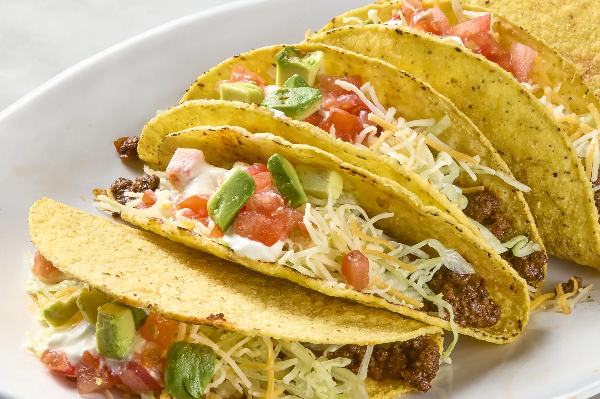
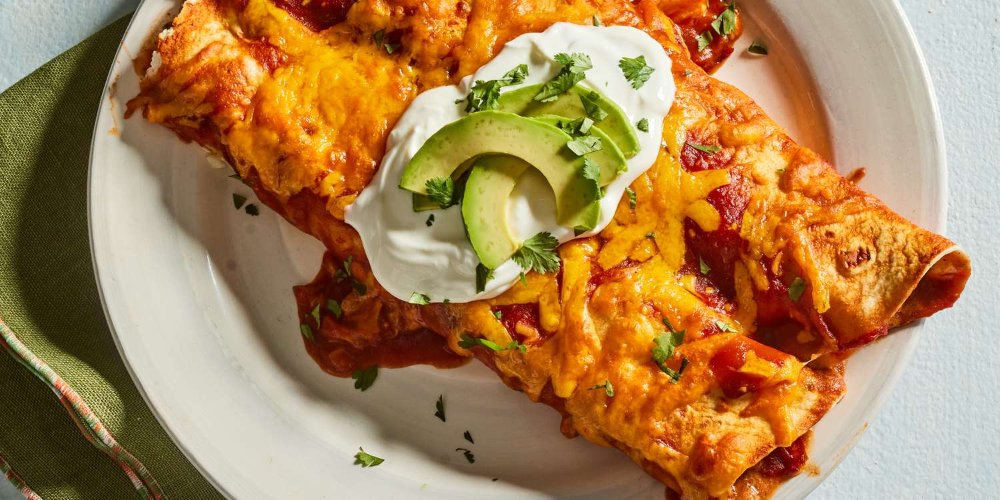

Tacos
Soft or crispy tortillas filled with meat, cheese, lettuce, salsa, and other toppings.
Ingredients and Steps
Ingredients:
- 1 lb ground beef or chicken
- 1 packet taco seasoning mix
- 12 taco shells or soft tortillas
- 1 cup shredded lettuce
- 1 cup diced tomatoes
- 1/2 cup shredded cheese
- 1/4 cup diced onions (optional)
- 1/4 cup chopped cilantro (optional)
- Sour cream and salsa for topping
Steps:
- In a skillet, cook the ground beef or chicken over medium heat until fully cooked. Drain any excess fat.
- Add the taco seasoning mix and follow the instructions on the packet to complete the meat preparation.
- Warm the taco shells or soft tortillas according to the package instructions.
- Assemble the tacos by filling each shell or tortilla with the seasoned meat, then topping with shredded lettuce, diced tomatoes, shredded cheese, and any optional toppings like diced onions and chopped cilantro.
- Finish with a dollop of sour cream and a spoonful of salsa on top.

Guacamole
A creamy dip made from mashed avocados, lime juice, onions, tomatoes, and cilantro.
Ingredients and Steps
Ingredients:
- 3 ripe avocados
- 1 lime, juiced
- 1 small onion, finely chopped
- 1-2 tomatoes, diced
- 2 tablespoons fresh cilantro, chopped
- 1 teaspoon salt
- 1 garlic clove, minced (optional)
- 1 jalapeño, finely chopped (optional)
Steps:
- Cut the avocados in half, remove the pit, and scoop the flesh into a bowl.
- Add lime juice to the avocados and mash them with a fork to your desired consistency.
- Stir in the finely chopped onion, diced tomatoes, cilantro, and salt.
- If you’re using garlic and jalapeño, add them to the mix.
- Taste and adjust seasoning if needed.
- Serve immediately with tortilla chips or as a topping for your favorite dishes.

Chiles Rellenos
Stuffed chili peppers, typically filled with cheese or meat, battered, and fried.
Ingredients and Steps
Ingredients:
- 6 large poblano peppers
- 1 cup shredded cheese (such as Monterey Jack or queso fresco)
- 1/2 cup flour
- 4 large eggs, separated
- 1 cup vegetable oil (for frying)
- Salt and pepper to taste
Steps:
- Roast the peppers: Preheat your broiler. Place the poblano peppers on a baking sheet and broil, turning occasionally, until the skin is charred and blistered. This should take about 8-10 minutes. Remove the peppers from the oven and place them in a sealed plastic bag or covered bowl to steam for about 10 minutes.
- Peel and prepare the peppers: Once the peppers have cooled, remove them from the bag and gently peel off the charred skin. Cut a small slit down the side of each pepper and carefully remove the seeds, being mindful not to tear the peppers.
- Stuff the peppers: Fill each pepper with shredded cheese. Use toothpicks to close the opening if needed.
- Prepare the batter: In a bowl, beat the egg whites until stiff peaks form. In a separate bowl, whisk the egg yolks and then gently fold them into the beaten egg whites. Season with salt.
- Coat the peppers: Lightly coat each stuffed pepper in flour, shaking off any excess. Dip the floured peppers into the egg batter, ensuring they are fully coated.
- Fry the peppers: Heat the vegetable oil in a large skillet over medium heat. Fry the peppers, turning occasionally, until they are golden brown on all sides. This should take about 2-3 minutes per side. Remove the peppers and place them on paper towels to drain excess oil.
- Serve: Season with salt and pepper to taste, and serve hot with your favorite sauce or side.

Tamales
Steamed corn dough filled with meat, cheese, or vegetables, wrapped in corn husks or banana leaves.
Ingredients and Steps
Ingredients:
- 2 cups masa harina (corn flour)
- 1 cup chicken broth
- 1/2 cup lard or vegetable shortening
- 1 teaspoon baking powder
- 1 teaspoon salt
- 2 cups shredded cooked chicken or pork
- 1 cup salsa verde or red chile sauce
- 20 dried corn husks, soaked in warm water
Steps:
- In a large bowl, mix the masa harina, baking powder, and salt. Gradually add the chicken broth and mix until well combined.
- In a separate bowl, beat the lard or vegetable shortening until fluffy. Gradually add the masa mixture, beating until smooth and well combined.
- Spread a thin layer of the masa dough onto the center of each soaked corn husk.
- Add a spoonful of shredded chicken or pork onto the masa, and top with a spoonful of salsa verde or red chile sauce.
- Fold the sides of the corn husk in towards the center, then fold the bottom up and secure with a strip of corn husk.
- Place the tamales upright in a steamer basket and steam for about 1-1.5 hours, or until the masa is firm and cooked through.
- Remove tamales from the steamer and let cool slightly before serving.

Enchiladas
Rolled tortillas filled with meat, cheese, or beans, covered in a chili sauce and baked.
Ingredients and Steps
Ingredients:
- 12 corn tortillas
- 2 cups shredded cooked chicken or beef
- 1 cup shredded cheese (cheddar or Monterey Jack)
- 1 can (15 oz) enchilada sauce
- 1/2 cup chopped onions
- 1/4 cup chopped fresh cilantro (optional)
- 1/2 cup sour cream (optional)
Steps:
- Preheat the oven to 350°F (175°C).
- Heat the tortillas in a skillet over medium heat until soft and pliable.
- Pour a thin layer of enchilada sauce into the bottom of a baking dish.
- Place a small amount of shredded chicken or beef in the center of each tortilla, sprinkle with cheese and onions, then roll up and place seam-side down in the baking dish.
- Pour the remaining enchilada sauce over the rolled tortillas, then sprinkle with the remaining cheese.
- Bake in the preheated oven for 20-25 minutes, or until the cheese is melted and bubbly.
- Garnish with chopped cilantro and serve with sour cream, if desired.

Mole Poblano
A rich and complex sauce made from chiles, chocolate, spices, and nuts, often served over chicken.
Ingredients and Steps
Ingredients:
- 4 dried ancho chiles
- 4 dried guajillo chiles
- 2 dried pasilla chiles
- 1/4 cup sesame seeds
- 1/4 cup almonds
- 1/4 cup peanuts
- 1/4 cup raisins
- 1/2 cup chopped onions
- 2 cloves garlic, minced
- 1/4 teaspoon ground cinnamon
- 1/4 teaspoon ground cloves
- 1/4 teaspoon ground coriander
- 1/4 teaspoon ground cumin
- 1/4 teaspoon ground black pepper
- 1/4 cup chopped tomatoes
- 2 cups chicken broth
- 1 ounce dark chocolate, chopped
- 2 tablespoons vegetable oil
- Salt and sugar to taste
- Cooked chicken for serving
Steps:
- Remove stems and seeds from the dried chiles. Toast them in a dry skillet over medium heat until fragrant, then soak them in hot water for about 20 minutes. Drain and set aside.
- In the same skillet, toast the sesame seeds, almonds, and peanuts until golden brown. Remove from heat and set aside.
- Heat the vegetable oil in a large pot over medium heat. Add the onions and garlic, and sauté until softened.
- Add the soaked chiles, toasted nuts and seeds, raisins, cinnamon, cloves, coriander, cumin, black pepper, and chopped tomatoes to the pot. Cook for about 5 minutes, stirring frequently.
- Transfer the mixture to a blender and add 1 cup of chicken broth. Blend until smooth, then return the mixture to the pot.
- Add the remaining chicken broth and chopped dark chocolate to the pot. Simmer over low heat, stirring occasionally, until the sauce thickens, about 30 minutes.
- Season with salt and sugar to taste.